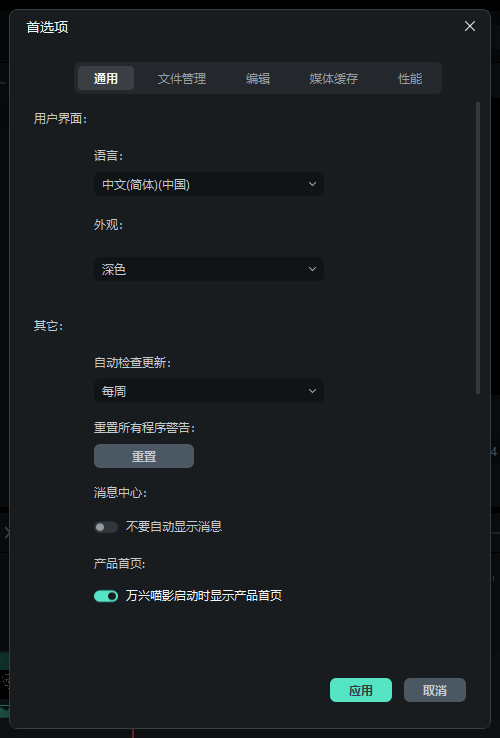
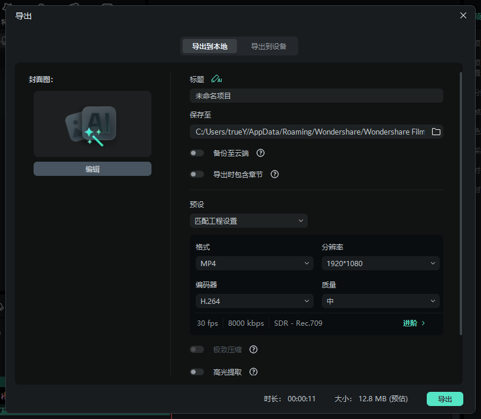

Vortex Cut · 弹窗系统设计 万兴喵影风格基线 · 覆盖现有全部 16 类弹窗
以两张万兴喵影参考稿（首选项 / 导出）为唯一风格基准，提取字体、字号、色调、圆角、控件形态与布局节奏，套用到本软件现有全部弹窗。内容保持各弹窗现有信息架构不变，只换皮；尺寸随内容允许变化，但令牌与控件语言严格统一。
00参考基准（万兴喵影实测截图）
两图即本设计的唯一事实来源：首选项给出「表单型弹窗」的行距、标签纵排、下拉与开关形态；导出给出「复合型弹窗」的居中页签、左右分栏、参数分组容器与底部元信息 + 主按钮。

参考稿 A · 首选项（500 × 738）表单型弹窗 · 标签在控件上方 · 大留白行距

参考稿 B · 导出（816 × 710）复合型弹窗 · 居中页签 · 左封面右参数 · 分组容器
整体色调弹窗面板近黑（#101214），比主界面更深；控件底 #23282c；仅靠明度分层，边框极弱（rgba(255,255,255,.07)）。
强调色唯一强调色为薄荷青（≈#2bd8b0）：主按钮实底 + 深色文字、开启态开关、「进阶 ›」文本链接。全站无第二强调色。
字体字号系统无衬线（Segoe UI / 微软雅黑）。标题 13.5px/600，正文与标签 12.5px，元信息 11–12px，时间码等宽字体。
圆角体系弹窗 12px · 分组容器 8px · 控件/按钮/页签 6px · 开关与徽章 全圆。三档圆角贯穿所有弹窗。
页签形态标题下方居中排列的胶囊页签：激活项实底 #3a4144 白字，未激活仅灰字，无下划线、无边框。
表单节奏标签在控件上方左对齐；字段间距 14px，分区之间用细分隔线或留白；大字段（封面、正文）独占左列。
开关与帮助开关 32×16 胶囊：关=灰轨浅钮，开=薄荷青轨白钮；说明性选项后缀圆圈「?」线性图标。
底部操作区无分隔线，仅留白；左侧元信息（时长/大小），右侧主按钮实底薄荷青 + 深色字；次级按钮灰底白字。
01设计令牌（弹窗体系专用）
与已确认的应用冷灰阶梯（#000 → #0f1214 → #181c1f）衔接：弹窗比应用内容层深一档，靠背幕 + 阴影 + 细边框浮起，复刻喵影「深面板」观感。以下令牌即落地时的 CSS 变量。
色彩
弹窗面板 --dlg-bg#121417
分组容器 / 卡片 --dlg-raise#1b2024
输入 · 下拉 · 列表底 --ctl-bg#23282c
次级按钮 --btn-bg#3a4145
页签激活 --tab-active#3a4144
主按钮 / 开关开启 / 链接 --primary#2bd8b0
主按钮文字 --primary-text#05271f
危险（删除） --danger#e5484d
警示（费用/兼容性） --warn#e8b45a
主文字 --text#e9ecec
标签 / 次文字 --text-2#c3c9c9
元信息 / 说明 --text-3#8b9396
占位 / 禁用文字 --text-4#667074
字体阶梯
弹窗标题：渲染与导出13.5px / 600
正文 · 标签 · 页签 · 按钮12.5px / 400–650
说明行 · 副标题 · 徽章11.5px / 400
微注 · 快捷键 kbd10.5–11px
时间码 / 哈希 / 路径Consolas 等宽
几何
圆角弹窗12 / 容器8 / 控件6 / 胶囊999
控件高度输入·下拉·按钮 30 / sm 26 / 页签 28
内边距标题 15·18 / 主体 18 / 底部 13·18
开关32 × 16 · 圆钮 12
背幕rgba(0,0,0,.55) + 0 28px 80px 阴影
滚动条8px · 球 #34393c · 透明轨
02弹窗解剖（统一框架）
所有弹窗共用一个五段式框架，宽高随内容变化，令牌不变。①标题区左标题右关闭；②页签区居中胶囊（单视图弹窗省略）；③表单区标签在上、控件在下，滚动条在此段内；④参数分组容器承载成组下拉；⑤底部操作区左元信息右按钮，无分隔线。
1标题区 15·18
2居中胶囊页签 28px
3标签在上 · 独立滚动
4分组容器 #1b2024 r8
5底部操作区
参数分组
30 fps8000 kbpsSDR · Rec.709进阶 ›
开关选项?
时长 00:00:11·大小 12.8 MB（预估）
①—⑤ 标注对应右侧示例弹窗中的位置 · 页签与元信息按需出现，其余段落为全部弹窗强制统一
①标题 13.5px/600，可带 ? 帮助图标；说明性副标题降级为 11.5px --text-3，仅必要时保留
②页签仅多视图弹窗使用（渲染导出 / 生成验证 / 图片生成 / 镜头需求）；居中、胶囊、无边框
③标签 12.5px --text-2 在上、控件在下；可选值后缀「可选」微注；字段间距 14px
④成组参数必须进分组容器（导出格式组 / 生成参数组 / Provider 新建组）
⑤确认类主按钮 = 薄荷青实底深字；危险动作 = 红实底白字；元信息（时长/大小/进度）在左
03通用控件库（全部弹窗共享）
落地时沉淀为 styles.css 的弹窗控件层，替换现有 .modal 系列样式；以下即全部控件与状态，任何弹窗不得引入体系外控件形态。
按钮
进阶 ›
高 30/sm26 · 圆角 6 · 主=薄荷青实底深字 #2bd8b0/#05271f · 危险=红实底白字 · 禁用 opacity .4
开关 · 复选 · 胶囊单选
开 / 关 / 禁用
勾选未选
图片TTS现有素材
开关 32×16 圆钮 12 · 复选框 14px 圆角4 选中青底 · 胶囊单选=青字青底细环
输入 · 下拉 · 文本域
底 #23282c · hover 提亮 · focus 青边 + 0 0 0 2px 青色弱环 · 无默认外框
页签 · 步骤条
导出到本地导出到设备
✓导入2编辑3导出
页签居中胶囊 · 激活 #3a4144 · 步骤条三态（done/on/todo）用于项目管理弹窗
提示条 · 状态徽章
✔只读信息提示：原始 ASR 结果不会被覆盖。
⚠费用提示：Prompt 会发送给外部 Provider。
⚠删除后相关片段将一并移除，不可撤销。
已就绪运行中 45%未测试失败排队中
四语义色条（青/琥珀/红/灰）左图标右文本 · 徽章 20px 胶囊 + 状态点
键位 · 进度 · 帮助
Ctrl+B拆分请按键…
阶段 composing · 45% · 剩余约 12s?
kbd 等宽 11px 双层描边 · 录制态青色呼吸 · 进度 4px 青色 · ? 图标 14px 圆环
04渲染与导出.render-panel-dialog · Ctrl+E
对标参考稿 B 的旗舰复刻：居中页签、左封面右参数、分组容器与底部元信息完全按参考稿节奏重建；第三个页签承接现有「任务与产物」记录。
导出后打开输出目录?
同时生成权威预览校验报告?
30 fps8000 kbpsSDR · Rec.709进阶 ›
硬件编码加速?
导出完成后系统通知?
ℹ通过 USB 连接移动设备后可直接推送到设备相册；当前未检测到已连接设备。
📱 iOS 设备
iPhone / iPad
未检测到设备
🤖 Android 设备
手机 / 平板
未检测到设备
渲染任务
权威预览运行中 · composing · 45% · 剩余约 12s
导出产物
品牌宣传片_v3.mp4completed · h264_nvenc · 12.8 MB
品牌宣传片_v2.mp4completed · h264 · fallback: 硬件编码不可用
时长 00:00:11·大小 12.8 MB（预估）
复刻参考稿 B：页签居中 · 左封面 176px + 编辑 · 右侧标题/保存至/开关组/预设/参数分组容器 · 底部时长大小 + 薄荷青主按钮 · 第三个页签为现有任务与产物列表
05多平台导出.export-batch-modal
平台 × 画幅 × 布局的目标卡改为 #1b2024 分组容器卡；每卡内三个下拉 + 摘要 + 行内操作；批次状态用进度条 + 徽章。信息架构与现状一致。
多平台导出
平台与画幅独立选择；仅同一 Revision 的权威预览可进入批次。
目标 1 预览已就绪
1080×1920 · H.264/AAC · 30fps
权威预览已就绪 · 无警告
目标 2 需要权威预览
1920×1080 · H.264/AAC · 30fps
需要本目标权威预览
批次 · running 45%
目录：D:\Exports\batch-0907\
douyin · 1080×1920completed · D:\Exports\batch-0907\douyin.mp4
完成bilibili · 1920×1080running · 45%
2 个目标 · 1 个批次进行中
目标卡 = 分组容器 + 三下拉 + 状态徽章 + 行内操作；批次状态块复用行列表 + 4px 进度条
06项目管理.project-management-modal · Ctrl+Alt+P
四步流程条改为三态胶囊步骤条；「新建 / 当前项目」两个分区改为分组容器；主按钮仅「创建项目」一个。
项目管理
集中管理项目名称与生命周期，编辑区只保留当前项目选择。
✓导入素材2编辑时间线3预览检查4导出视频
当前项目 活动
品牌宣传片
步骤条（done ✓ / on 青色 / todo 灰）· 两个分区 = 分组容器 · 每区仅一个主动作
07AI 粗剪.ai-roughcut · Ctrl+I
三态展示（表单 → 外传确认 → 运行中）。「新建 Provider」折叠为分组容器；能力测试列表每行 = 文本 + 行内小按钮；外传确认复用 fdl 信息网格。
AI 粗剪 ?
仅在确认外传内容后调用 Provider。
外传内容确认后才会发送
✎你的本地指令：30 秒内建立「痛点 → 方案 → 证据」三段结构…
- Provider
- GLM-4 · cloud
- 模型
- glm-4-plus
- 字段类别
- 主题、受众、叙事目标
- 内容计数
- 3 Clip / 1 Caption / 0 锁定
- 字符 / Token
- 412 / ≈380
- 哈希
a3f9…c21e- 费用
- 最终费用以 Provider 账单为准。
左：表单态（字段两列化 + 能力测试行 + 折叠的新建 Provider 分组）· 右上：外传确认态（fdl 信息网格）· 右下：运行态（4px 进度 + 取消）
08AI 修改.planning-patch · Ctrl+Shift+I
指令输入 + Provider 测试 + 提案差异三步；差异视图统一为 fdiff 分组卡（概览 / Clip / Caption / 锁定），变更类型用彩色标记（+青 −红 ~琥珀）。
AI 修改
提案不会自动修改正式 Timeline。
GLM-4 · AI 修改可用
Kimi · 当前 Provider 不支持 AI 修改
发送前会再次确认外传内容
概览
Clip 3 · Caption 1 · 锁定 0 · 时长 +00:00:02:12
CLIP
+ added · clip_08a2（产品特写延长）
− removed · clip_03f1
~ moved · clip_05c9 00:04:10–00:07:22 → 00:04:12–00:07:24
CAPTION
~ updated · cap_12「限时优惠」起点提前 2s
应用后生成新 Revision，可撤销
左：指令态 · 右：提案差异态（fdiff 分组卡，变更类型着色）——版本比较弹窗复用同一差异视图
09版本比较.revision-compare · Ctrl+Alt+V
版本比较
只读操作，不改变当前 Revision、草稿或渲染记录。
概览
Clip 2 · Caption 0 · 锁定 0 · 时长 +00:00:00:22
CLIP
~ moved · clip_05c9 00:04:10 → 00:04:12
~ trimmed · clip_06d1 00:07:24 → 00:07:02
选择器并排 + 差异视图复用 fdiff · 与 AI 修改提案态保持同一视觉语言
10生成验证（模拟）.generation-workbench · Ctrl+Alt+G
页签切换「新建验证 / 历史与任务」；验证类型用胶囊单选；参数进分组容器 2×2；模拟声明统一用青色提示条。
生成验证（模拟）
验证生成请求、任务状态和恢复链路，不执行真实生成。
🧪模拟验证：不调用外部 Provider、不生成媒体、不产生费用。
图片参数验证TTS 参数验证
输入素材引用 1–32 项，仅提交 Asset ID
8月22日 (1).mp4 视频 · 本地
海报.png 图片 · 本地
请求历史
TTS 参数验证13:02 · c44d…190b
Attempt 1 succeeded验证完成，未生成媒体 · Provider 调用 0 次
Attempt 2 runningTask 7f2e…
胶囊单选替代 radio · 素材引用分组容器 · 参数 2×2 · 历史页左请求右任务双栏
11真实图片生成（受控）.provider-image-modal · Ctrl+Alt+I
费用与隐私提示是本弹窗的核心语义：琥珀警示条置顶；付费确认页用 fdl 网格并高亮费用行；Provider 管理折叠为分组容器。
真实图片生成（受控）
纯文本生成单张 PNG；成功后仅注册为项目受管图片素材，不写入 Timeline。
⚠外部调用与费用提示：Prompt 会发送给外部 Provider，可能产生费用。一次确认对应每个 Task 最多一次调用；失败或超时后 Provider 仍可能已处理。重试会再次调用并可能再次收费。
🔒Prompt 明文不写入数据库、Job、日志或历史记录；不要粘贴密钥、隐私数据或字幕/转写正文。
- Provider
- apikey_fun_images
- 模型
- gpt-image-2
- 请求尺寸
- 1024 × 1024（实际输出以 Provider 返回为准）
- 图片数
- 1
- Prompt
- 正文不回显；SHA-256：
77aa…03bd
- 估算费用
- ¥ 0.10 · tier-1k
- 确认有效期
- 2026-09-07 12:31
左：创建态（费用警示置顶 + Provider/尺寸并排）· 右：付费确认态（费用行用警示色高亮）
12镜头与资产需求清单.shot-workbench · Ctrl+Alt+S
三页签工作台；镜头卡改为分组容器卡，视觉/旁白需求用胶囊单选；历史页左列表右详情；零副作用声明用青色提示条。
镜头与资产需求清单
品牌宣传片 · 每次保存形成不可变 Revision
分镜 v4 当前3 个镜头 · 2026-09-07 11:20
分镜 v3 已确认3 个镜头 · 2026-09-06 18:44
分镜 v22 个镜头 · 2026-09-06 10:02
左：编辑态（镜头卡 + 胶囊单选）· 右：历史态（当前/已确认徽章行列表）
13创建本地转录transcriptionAsset Dialog
🎬8月22日 (1).mp4 · 00:00:11 · 本地运行，不上传媒体或转录正文。
生成词级时间戳
窄表单弹窗基线（440px）：来源信息提示条 + 单下拉 + 复选 + 底部双按钮
14确认下载本地模型confirmModel Dialog
SenseVoice Small
本地语音识别 · 转录用途
- 下载大小
- 465 MB
- 许可证
- MIT（需接受）
- 隐私
- 模型在本机运行，不上传媒体或转录正文。
我已阅读并接受该许可证
fdl 信息网格 + 许可证复选（未勾选时主按钮禁用）
15删除素材.asset-delete-modal
确定要删除素材「8月22日 (1).mp4」吗？
⚠如果该素材已添加到时间线，其相关片段（含关联字幕与转场）将一并删除，此操作不可撤销。
危险确认基线：红色警示条 + 红实底按钮（替代现状左红线深底样式）
16原始转录.transcript-viewer
原始转录
zh · sensevoice · v1.0
🔒原始 ASR 结果只读。字幕修订不会覆盖这份记录。
00:00.0–00:03.2大家好，欢迎来到这一期的新品开箱。
00:03.2–00:07.5今天我们要看的这台机器，是三个月以来我唯一一台随身携带的设备。
00:07.5–00:11.0先说结论：如果你在意续航，这期值得看完。
只读数据弹窗：时间码用等宽 kbd 样式 · 行列表斑马hover · 只读声明用青色提示条
17命令搜索.command-palette · Ctrl+K
↑ ↓ 选择 · Enter 执行 · Esc 关闭
激活行 = 青色弱底 · 键位 kbd 靠右 · 不可用原因用徽章 · 底部操作区放导航提示
18快捷键设置.shortcuts-dialog · Ctrl+Alt+K
快捷键设置
点击「录制」后按下新键位；Ctrl+Shift+Z（重做）与 Backspace（删除）为固定别名，不参与自定义。
拆分所选片段Ctrl+B
复制所选片段Ctrl+C
粘贴片段Ctrl+V
撤销Ctrl+Z
播放/暂停Space
删除所选对象请按键…（Esc 取消）
行列表 + kbd + 行内录制按钮；录制中行 = 青色弱底 + 呼吸 kbd
19轻量确认弹窗与内联浮层确认时间线装配 / 确认采用 / 添加转场 popover
零表单确认弹窗统一 420px 三段式（问句 → 影响说明 → 双按钮）；「添加转场」为时间线内联浮层卡，同样使用分组容器与胶囊选择。
将新增 1 个图片 Clip；现有 Clip 4 个，位移 2 个，字幕位移 1 个。
- 总时长
- 00:00:28 → 00:00:34
采用会追加 Requirement 履约记录，不会修改 Timeline。
采用结果 · 1024×1024
来源任务 img-7f2e
◍ 淡入淡出◐ 叠化▶ 黑场过渡⇥ 左擦除⤢ 缩放
三个轻弹窗同语言：420–440px · 问句 12.5px + 影响说明 · 双按钮右对齐（取消 ghost + 确认 primary）
20现状 → 目标 映射与落地清单
落地范围仅 styles.css 的弹窗层 + 各弹窗类名的样式替换，不改任何 TSX 结构（现有 class 名全部保留，只换样式定义）。控件命名建议以 f- 前缀沉淀通用层。
| # | 现状（styles.css） | 目标令牌 / 形态 | 状态 |
|---|
| 1 | .modal-backdrop rgba(4,7,8,.82) | rgba(0,0,0,.55) · 保留 grid 居中与滚动 | 提案 |
| 2 | .modal #2c2c2c · 无圆角 · border #4b585e | #121417 · r12 · border rgba(255,255,255,.13) · 大阴影 · flex 列布局（body 独立滚动） | 提案 |
| 3 | .modal h2 默认字号 | 13.5px/600 + 可选副标题 11.5px --text-3；关闭钮 26px 圆角方块 hover | 提案 |
| 4 | 按钮全局样式 #222b30 / 金色 hover | 次级 #3a4145 r6 h30 · 主 #2bd8b0/#05271f · 危险 #e5484d 白字 · ghost 透明 | 提案 |
| 5 | input/select/textarea #11171a border #3b474d | #23282c r6 h30 无边框 · focus 青边 + 2px 弱环 · label 在上 12.5px | 提案 |
| 6 | .modal dl 90px 网格 | .fdl 92px 网格 · #1b2024 容器 r8 · 值可含等宽哈希 | 提案 |
| 7 | .modal-actions 右对齐按钮组 | .fdlg-ft：左元信息（时长/大小/进度）+ 右按钮组，无分隔线仅留白 | 提案 |
| 8 | .delete-warning 左红线深红底 | .fnote.danger 红色 12% 弱底 + 35% 细边框 r6 | 提案 |
| 9 | .readonly-note 绿色调 | .fnote 青色弱底（对齐 --accent-dim）· 警费用用 .warn | 提案 |
| 10 | .generation-tabs 下划线页签 | 居中胶囊页签：激活 #3a4144 实底，无下划线 | 提案 |
| 11 | .project-steps 底边线步骤 | 三态胶囊步骤条（✓ done / 青on / 灰 todo） | 提案 |
| 12 | .rendition-target / .batch-status | 目标卡 = .fgroup 容器 + 3 下拉 + 状态徽章 + 行内按钮；批次进度 4px 青条 | 提案 |
| 13 | .diff-groups | .fdiff 分组卡：小标题字距 1px 灰 + 等宽行，变更 + 青 / − 红 / ~ 琥珀 | 提案 |
| 14 | .shortcut-row kbd / .command-list | kbd 双层描边 r5 等宽 11px；命令行激活 = 青弱底；不可用原因徽章化 | 提案 |
| 15 | .shot-card / .generation-task | 统一 .fgroup 卡片 + 行内 ibtn（26px）；radio/checkbox 胶囊化（视觉/旁白选择） | 提案 |
| 16 | progress 原生 | 4px 圆角青色进度条（运行态任务 / 批次 / AI 进度共用） | 提案 |
| 17 | .add-transition-card（内联样式） | 迁出内联样式 → .fdlg 440px + 胶囊转场选择（见 §19） | 提案 |
| 18 | 滚动条（系统默认） | 弹窗 body 8px · 球 #34393c · 透明轨（对齐参考稿 A 细滚动条） | 提案 |
| 落地批次 | 内容 | 状态 |
|---|
| 批次 1 · 框架与控件层 | .modal-backdrop/.modal 框架 + 按钮/输入/下拉/开关/页签/徽章/提示条/kbd/进度 令牌化（新增 ~30 条规则，替换第 191 行起的弹窗段） | 待确认 |
| 批次 2 · 各弹窗类适配 | §20 表中 12–17 项：batch / diff / shortcuts / command / shot-card / generation-task / add-transition 样式替换 | 待确认 |
| 批次 3 · 交互态与可达性 | focus-visible 青色环统一（替代现金色 #f3d79d）· hover 仅提亮不加边框 · 禁用 0.4 · 滚动条 | 待确认 |
| 不随主题变 | 弹窗内等宽字体场景（时间码/哈希/路径 Consolas）· 危险红语义 · 预览播放器黑底 | 保持 |